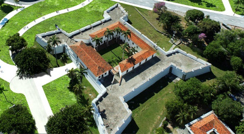

Ponto Turístico: "FORTE DAS CINCO PONTAS"
História
O Forte de São Tiago das Cinco Pontas é um dos monumentos mais expressivos do patrimônio colonial brasileiro.
Construído em 1630, durante a ocupação holandesa nas áreas em que hoje estão as cidades de Recife e Olinda,
o espaço abriga o Museu da Cidade do Recife, que tem em seu acervo fotografias,
mapas e fragmentos arqueológicos que representam a história da
evolução urbana do Recife do século XVII aos dias atuais.
Embora o monumento tenha recebido o nome de batismo de Frederik Hendrik, Príncipe de Orange,
logo ganhou o apelido de Forte das Cinco Pontas, devido à sua forma pentagonal.
Os objetivos mais relevantes da fortaleza eram os de garantir à população o suprimento de água potável,
mediante a proteção das cacimbas (ponto vital para o abastecimento de água do Recife),
e impedir que os navios inimigos circulassem pelas águas do rio Capibaribe e chegassem até a Barreta dos Afogados
(através de uma passagem existente nos arrecifes), podendo, a partir daí, escapar com os barcos carregados de açúcar.
No ano de 1654, porém, as forças de resistência portuguesa venceram as tropas flamengas e ocuparam o forte.
Neste período, começou a primeira grande reforma da fortificação, reconstruída em pedra e cal e, agora,
apenas com quatro pontas sua estrutura original era composta de madeira, terra batida e barro.
A obra terminou em 1684, quando a fortificação foi rebatizada de Forte de São Tiago, pelo fato de haver,
em seu interior, uma pequena capela dedicada a São Tiago Maior, um dos seus santos padroeiros.
Entretanto, o nome Cinco Pontas, já consolidado, permanece até os dias de hoje.
Projeto que valoriza e preserva
E para somar mais beleza ao local, o Instituto Neoenergia, em parceria com a Prefeitura do Recife, instalou,
em 2018, um novo sistema de iluminação no monumento, que valoriza a muralha da fortificação,
cenário de batalhas entre portugueses e holandeses. A revitalização da fachada lança, literalmente,
luz a um pedaço da história do Brasil Colonial e contribui para a preservação da memória artística e cultural do país.
A revitalização promovida pelo Instituto Neoenergia valoriza a importância histórica do monumento.
Além da preservação do patrimônio artístico-cultural, o recém-instalado sistema de iluminação em LED
prevê uma economia no consumo de energia superior a 30%, em relação ao antigo projeto de iluminação.
A fachada passa a ser iluminada por 66 projetores de luz que permitem a troca de tonalidades de cores,
possibilitando o engajamento do equipamento urbano a datas comemorativas e sociais. Os postes ornamentais
instalados no jardim do edifício também receberam novas lâmpadas eficientes.
A entrega do projeto de iluminação do Forte das Cinco Pontas representa o compromisso do Instituto Neoenergia
com os valores históricos, artísticos e culturais brasileiros, em consonância com a atuação
desenvolvida mundialmente pelas Fundações do Grupo Iberdrola.